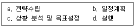
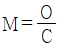
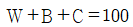
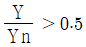
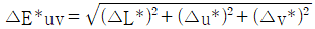

컬러리스트기사 (2021-08-14 기출문제)
1과목: 색채심리 마케팅
1. 환경문제를 생각하는 소비자를 위해서 천연재료의 특성을 부각시키거나 제품이 갖는 환경보호의 이미지를 부각시키는 '그린마케팅'과 관련한 색채마케팅전략은?
- 보편적 색채전략
- 혁신적 색채전략
- 의미론적 색채전략
- 보수적 색채전략
(정답률: 74%)

2. 색채정보 분석방법 중 의미의 요인분석에 해당되지 않는 것은?
- 평가차원(Evaluation)
- 역능차원(Potency)
- 활동차원(Activity)
- 지각차원(Perception)
(정답률: 46%)
3. 제시된 색과 연상의 구분이 다른 것은?
- 빨강 - 사과
- 노랑 – 병아리
- 파랑 - 바다
- 보라 - 화려함
(정답률: 80%)
4. SD(Semantic Differential)법에 관한 설명 중 틀린 것은?
- 이미지의 심층 면접법과 언어 연상법이다.
- 이미지의 수량적 척도화의 방법이다.
- 형용사 반대어 쌍으로 척도를 만들어 피험자에게 평가하게 한다.
- 특정 개념이나 기호가 지니는 정성적 의미를 객관적, 정량적으로 측정하는 방법이다.
(정답률: 25%)
5. 환경주의적 색채 마케팅에 대한 설명으로 거리가 먼 것은?
- 재활용된 재료의 활용을 색채마케팅으로 극대화한다.
- 대표적인 색채는 노랑이다.
- 경제적이고 효과적인 색채마케팅을 강조한다.
- 많은 수의 색채를 쓰기보다 환경적으로 선별된 색채를 선호한다.
(정답률: 77%)
6. 색채와 촉감 간의 상관관계가 잘못된 것은?
- 부드러움 - 밝은 난색계
- 거칠음 - 진한 난색계
- 딱딱함 - 진한 한색계
- 단단함 - 한색 계열
(정답률: 69%)
7. 외부 지향적 소비자 가치관에 있어서 가장 중요한 사항은?
- 기능성
- 경제성
- 소속감
- 심미감
(정답률: 45%)
8. 색채조사를 위한 표본추출 방법에서 군집(집락, cluster) 표본 추출을 설명한 것으로 옳은 것은?
- 표본을 선정하기 전에 여러 하위집단으로 분류하고 각 하위집단별로 비례적으로 표본을 선정한다.
- 모집단의 개체를 구획하는 구조를 활용하여 표본추출 대상 개체의 집합으로 이용하면 표본추출의 대상명부가 단순해지며 표본추출도 단순해진다.
- 조사결과에 크게 영향을 미치는 변수를 기준으로 하위 모집단을 구분하는 것이 좋다.
- 지역적인 특성에 따른 소비자의 자동차 색채 선호 특성 등을 조사할 때 유리하다.
(정답률: 39%)
9. 색채시장조사 방법 중 개별 면접조사에 대한 설명으로 틀린 것은?
- 개별 면접조사는 심층적이고 복잡한 정보의 수집이 가능하다.
- 개별 면접조사는 조사자와 참여자 간의 관계 형성이 쉽다.
- 개별 면접조사가 전화 면접조사보다 신뢰성이 높다.
- 개별 면접조사는 조사비용과 시간이 적게 들고 조사원의 선발에 대한 부담이 없다.
(정답률: 85%)
10. 색채 정보 수집에서 가장 많이 사용되는 방법은?
- 패널 조사법
- 현장 관찰법
- 실험 연구법
- 표본 조사법
(정답률: 67%)
11. 라이프스타일의 분석방법인 사이코그래픽스(psychographics)에 대한 설명으로 옳은 것은?
- 라이프스타일을 측정하기 위해 일반적으로 사용하는 방법으로 심리적 특성과 사회적 특성을 혼합한 것이다.
- 사이코그래픽스 조사는 활동, 관심, 의견의 세 가지 변수에 의해 측정된다.
- 조사대상자에 대해 동일한 조사항목과 그와 관련한 질문에 대한 답으로 평가한다.
- 어떤 특정 제품이나 상표에 대한 소비자들의 태도나 행동과 같은 구체적인 라이프스타일은 알 수 없다.
(정답률: 57%)
12. 마케팅 믹스에 대한 설명으로 옳은 것은?
- 시장을 세분화하는 방법
- 마케팅에서 경쟁 제품과의 위치 선정을 하기 위한 방법
- 마케팅에서 제품 구매 집단을 선정하는 방법
- 표적시장에서 원하는 결과를 얻기 위해 가능한 수단을 활용하는 방법
(정답률: 66%)
13. 효과적인 컬러 마케팅 전략수립 과정의 순서가 옳은 것은?

- a → c → b → d
- c → b → a → d
- c → a → b → d
- a → c → d → b
(정답률: 67%)
14. 개인과 색채의 관계에 대한 용어의 설명이 틀린 것은?
- 개인이 소비하는 색과 디자인의 선택을 퍼플러 유즈(popular use)라고 한다.
- 개인의 기호에 따른 색이나 디자인 선택을 컨슈머 유즈(consumer use)라고 한다.
- 개인의 일시적 호감에 따라 변하는 색채를 템포러리 플레져 컬러(temporary pleasure colors)라고 한다.
- 유행색은 주기를 갖고 계속 변화하는 색으로 트렌드 컬러(trend color)라고 한다.
(정답률: 59%)
15. 색채조절 효과에 대한 설명으로 옳은 것은?
- 바닥면에 고명도의 색을 사용하여 안정감을 높인다.
- 빨강과 주황은 활동성을 높이고 마음을 진정시키는 역할을 한다.
- 회복기 환자에게는 어두운 조명과 따뜻한 색채가 적합하다.
- 주의 집중을 위한 작업 현장은 한색계열의 차분한 색조로 배색한다.
(정답률: 62%)
16. 마케팅에서 소비자 생활유형을 조사하는 목적이 아닌 것은?
- 소비자의 선호색을 조사하기 위해
- 소비자의 가치관을 조사하기 위해
- 소비자의 소비 형태를 조사하기 위해
- 소비자의 행동 특성을 조사하기 위해
(정답률: 49%)
17. 색채선호의 원리에 대한 내용으로 틀린 것은?
- 선호색은 대상이 무엇이든 항상 동일하다.
- 서양의 경우 성인의 파란색에 대한 선호 경향은 매우 뚜렷한 편이다.
- 노년층의 경우 고채도 난색 계열의 색채에 대한 선호가 높은 편이다.
- 선호색은 문화권, 성별, 연령 등 개인적 특성에 따라 차이가 있다.
(정답률: 80%)
18. 문화에 따른 색채 발달의 순서로 옳은 것은?
- 하양 → 초록 → 회색 → 파랑
- 하양 → 노랑 → 갈색 → 파랑
- 검정 → 빨강 → 노랑 → 갈색
- 검정 → 파랑 → 주황 → 갈색
(정답률: 39%)
19. 색채와 음악을 연결한 공감각의 특성을 잘 이용하여 브로드웨이 부기우기(Broadway Boogie Woogie) 라는 작품을 제작한 작가는?
- 요하네스 이텐(Johaness Itten)
- 몬드리안(Mondrian)
- 카스텔(Castel)
- 모리스 데리베레(Maurice Deribere)
(정답률: 53%)
20. 시장 세분화의 변수가 아닌 것은?
- 지리적 변수
- 인구 통계적 변수
- 사회, 문화적 변수
- 상징적 변수
(정답률: 60%)
2과목: 색채디자인
21. 옥외광고, 전단 등 제품의 판매촉진을 위한 광고 홍보활동을 뜻하는 것은?
- POP(Point Of Purchase) 광고
- SP(Sales Promotion) 광고
- Spot 광고
- Local 광고
(정답률: 52%)
22. 인간이 사용하기에 원활해야 하고, 디자인 기능과 관련된 인간의 신체적 조건, 치수에 관한 학문은?
- 산업공학
- 인간공학
- 치수공학
- 계측제어공학
(정답률: 66%)
23. 윌리엄 모리스가 미술공예운동에서 주로 추구한 수공예의 양식은?
- 바로크
- 로마네스크
- 고딕
- 로코코
(정답률: 38%)
24. 아이디어 발상에 많이 활용되는 창조기법으로 디자인 문제를 탐구하고 변형시키기 위해 두뇌와 신경 조직의 무의식적인 활동을 조장하는 것은?
- 시네틱스(Synectics)
- 투입-산출 분석(Input-Output Analysis)
- 형태분석법(Morphological Analysis)
- 브레인스토밍(Brainstorming)
(정답률: 21%)
25. 디자인 사조와 색채와의 연결이 틀린 것은?
- 아르누보 : 밝고 연한 파스텔 색조
- 큐비즘 : 난색의 따뜻하고 강렬한 색
- 데스틸 : 빨강, 노랑, 파랑
- 팝 아트 : 흰색, 회색, 검은색
(정답률: 66%)
26. 저속한 모방 예술이라는 뜻의 독일어에서의 유래한 것은?
- 하이테크
- 키치디자인
- 생활미술운동
- 포스트모더니즘
(정답률: 56%)
27. 병원 색채계획 시 고려사항으로 거리가 먼 것은?
- 병실은 안방과 같은 온화한 분위기
- 수술실은 정밀한 작업을 위한 환경 조성
- 일반 사무실은 업무 효율성과 조도 고려
- 대기실은 화려한 색채적용과 동선체계 고려
(정답률: 74%)
28. 바우하우스의 교육 이념이 아닌 것은?
- 인간이 기계에 의해서 노예화가 되는 것을 방지한다.
- 인간에 의한 규격화된 합리적인 양식을 추구한다.
- 기계의 이점은 유지하면서 결점만 제거한다.
- 일시적인 것이 아닌 우수한 표준을 창조한다.
(정답률: 30%)
29. 시각디자인에서 메시지의 전달을 위해 회화적 조형표현을 이용하는 영역은?
- 포스터
- 신문광고
- 문자디자인
- 일러스트레이션
(정답률: 44%)
30. 건물의 외벽 등을 장식하는 그래픽이미지 작업은?
- 사인보드
- 화공기술
- 슈퍼그래픽
- POP 광고
(정답률: 37%)
31. Good Design 조건에 대한 설명 중 틀린 것은?
- 독창성 : 항상 창조적이며 이상을 추구하는 디자인
- 경제성 : 최소의 인적, 물적, 금융, 정보를 투자하여 최대의 효과를 가져올 수 있는 디자인
- 심미성 : 아름다움을 느끼는 미적 의식으로 주관적, 감성 적인 디자인
- 합목적성 : 디자인 원리에서 가리키는 모든 조건이 하나의 통일체로 질서를 유지하는 디자인
(정답률: 57%)
32. 시각적 질감을 자연 질감과 기계 질감으로 분류할 때 '자연 질감'에 속하지 않는 것은?
- 나뭇결무늬
- 동물털
- 물고기 비늘
- 사진의 망점
(정답률: 68%)
33. 네덜란드에서 일어나 신조형주의 운동으로, 화면을 수평, 수직으로 분할하고 삼원색과 무채색을 이용한 구성이 특징인 디자인 사조는?
- 큐비즘
- 데스틸
- 바우하우스
- 아르데코
(정답률: 56%)
34. 환경적 요소뿐만 아니라 사회·윤리적 이슈를 함께 실현하는 미래 지향적 디자인은?
- 범용 디자인
- 지속 가능 디자인
- 유니버설 디자인
- UX 디자인
(정답률: 46%)
35. 수공의 장점을 살리되, 예술작품처럼 한 점만을 제작하는 것이 아니라 어느 정도의 양산(量産)이 가능하도록 설계, 제작하는 생활조형 디자인의 총칭을 의미하는 것은?
- 크라프트 디자인(Craft Design)
- 오가닉 디자인(Organic Design)
- 어드밴스 디자인(Advanced Design)
- 미니멀 디자인(Minimal Design)
(정답률: 52%)
36. 색채계획에 따른 주조색, 보조색, 강조색의 배색에 대한 설명이 틀린 것은?
- 주조색 : 전체의 70% 이상을 차지하는 색이다.
- 주조색 : 전체적인 이미지를 좌우하게 된다.
- 보조색 : 색채계획 시 주조색을 보완해주는 역할을 한다.
- 강조색 : 전체의 30% 정도이므로 디자인 대상을 변화시키기 어렵다.
(정답률: 73%)
37. 디자인 대상 제품이 시장 전체에서 가격, 색채 등이 어느 위치에 있는지를 확인하는 방법은?
- 타키팅(targeting)
- 시뮬레이션(simulation)
- 프레젠테이션(presentation)
- 포지셔닝(positioning)
(정답률: 69%)
38. 단시간 내에 급속도로 생겼다가 사라지는 유행을 의미하는 것은?
- 트렌드(trend)
- 포드(ford)
- 클래식(classic)
- 패드(fad)
(정답률: 36%)
39. 기계가 지닌 차갑고 역동적 아름다움을 조형예술의 주제로 사용하고, 스피드 감이나 운동을 표현하기 위해 시간의 요소를 도입하려고 시도한 예술운동은?
- 구성주의
- 옵아트
- 미니멀리즘
- 미래주의
(정답률: 46%)
40. 독일의 베르트하이머(Wertheimer)가 중심이 된 게슈탈트(Gestalt) 학파가 제창한 그루핑 법칙이 아닌 것은?
- 근접 요인
- 폐쇄 요인
- 유사 요인
- 비대칭 요인
(정답률: 43%)
3과목: 색채관리
41. 육안조색 시 자연주광 조명에 의한 색 비교에 대한 설명으로 틀린 것은?
- 북반구에서의 주광은 북창을 통해서 확산된 광을 사용한다.
- 붉은 벽돌 벽 또는 초록의 수목과 같은 진한 색의 물체 에서 반사하지 않는 확산 주광을 이용해야 한다.
- 시료면의 범위보다 넓은 범위를 균일하게 조명해야 한다.
- 적어도 4000 lx의 조도가 되어야 한다.
(정답률: 55%)
42. 진공으로 된 유리관에 수은과 아르곤 가스를 넣고 안쪽 벽에 형광 도료를 칠하여, 수은의 방전으로 생긴 자외선을 가시광선으로 바꾸어 조명하는 등은?
- 백열등
- 수은등
- 형광등
- 나트륨등
(정답률: 37%)
43. 육안검색에 대한 설명으로 틀린 것은?
- 시료면, 표준면 및 배경은 동일 평면상에 있는 것이 바람직하다.
- 자연광은 주로 남쪽 하늘 주광을 사용한다.
- 육안 비교 방법은 표면색 비교에 이용된다.
- 시료면 및 표준면의 모양이나 크기를 조정할 필요가 있는 경우에는 마스크를 사용한다.
(정답률: 38%)
44. 조건등색(metamerism)에 대한 설명 중 틀린 것은?
- 조명에 따라 두 견본이 같게도 다르게도 보인다.
- 모니터에서 색 재현은 조건 등색에 해당한다.
- 사람의 시감 특성과는 관련이 없다.
- 분광반사율이 달라도 같은 색 자극을 일으킬 수 있다.
(정답률: 60%)
45. 컬러에 관련한 용어 설명으로 틀린 것은?
- chrominance : 시료색 자극의 특정 무채색 자극에서 색도차와 휘도의 곱
- color gamut : 특정 조건에 따라 발색되는 모든 색을 포함하는 색도 좌표도 또는 색공간 내의 영역
- lightness : 광원 또는 물체 표면의 명암에 관한 시지각의 속성
- luminance : 유한한 면적을 갖고 있는 발광면의 밝기를 나타내는 양
(정답률: 21%)
46. 도장면, 타일, 법랑 등 광택 범위가 넓은 범위를 특정하고, 일반적 대상물에 적용하는 경면광택도 특정에 적합한 것은?
- 85도 경면광택도 [Gs(85)]
- 60도 경면광택도 [Gs(60)]
- 20도 경면광택도 [Gs(20)]
- 10도 경면광택도 [Gs(10)]
(정답률: 34%)
47. 프로파일로 변환(convert to profile) 기능에 대한 설명으로 틀린 것은?
- 목적지 프로파일로 변환 시 절대색도계 렌더링 인덴트를 사용하면 CIE LAB 절대수치에 따른 변화를 수행한다.
- sRGB 이미지를 AdobeRGB 프로파일로 변화하면 이미지의 색영역이 확장되어 채도가 증가한다.
- 변환 시 실제로 계산을 담당하는 부분을 CMM이라고 한다.
- 프로파일로 변환에는 소스와 목적지에 해당하는 두 개의 프로파일이 필요하다.
(정답률: 36%)
48. 평판 인쇄용 잉크를 틀린 것은?
- 낱장 평판 잉크
- 오프셋 운전 잉크
- 그라비어 잉크
- 평판 신문 잉크
(정답률: 48%)
49. 색료에 관한 설명으로 틀린 것은?
- 안료는 주로 용해되지 않고 사용된다.
- 염료는 색료의 한 종류이다.
- 도료는 주로 안료를 사용하여 생산된다.
- 플라스틱은 염료를 사용하여 생산된다.
(정답률: 53%)
50. 프린터의 색채 구성에 관한 설명으로 틀린 것은?
- 프린터의 해상도는 dpi라는 단위로 측정된다.
- 모니터와 컬러 프린터는 색영역의 크기가 같다.
- 컬러 프린터는 CMYK의 조합으로 출력된다.
- 색영역(Color Gamut)은 해상도와 다르다.
(정답률: 66%)
51. 정확한 색채측정에 대한 설명이 틀린 것은?
- SCI 방식은 광택 성분을 포함하여 측정하는 방식이다.
- 백색 기준물을 먼저 측정하여 기기를 교정시킨 후 측정 한다.
- 측정용 표준광은 CIE A 표준광과 CIE D65 표준광이다.
- 기준물의 분광 반사율은 측정방식(geometry)과 무관한 일정한 값을 갖는다.
(정답률: 42%)
52. 색영역 맵핑(color gamut mapping)을 설명한 것은?
- 디지털 기기 내의 색체계 RGB를 L*a*b*로 바꾸는 것
- 디지털 기기 내의 색체계 CMYK를 L*a*b*로 바꾸는 것
- 매체의 색영역과 디지털 기기의 색영역 차이를 조정하여 맞추려는 것
- 색공간에서 디지털 기기들 간의 색차를 계산하는 것
(정답률: 56%)
53. CIE LAB 색체계에서 색차식을 나타내는 계산식으로 옳은 것은?
- ΔE*ab＝[(ΔL*)2＋(Δa*)2＋(Δb*)2]1/2
- ΔE*ab＝[(ΔL*)2＋(ΔC*)2＋(Δb*)2]1/2
- ΔE*ab＝[(Δa*)2＋(Δb*)2＋(ΔH*)2]1/2
- ΔE*ab＝[(Δa*)2＋(ΔC*)2＋(ΔH*)2]1/2
(정답률: 49%)
54. 조명의 CIE 상관색온도(Correlated color Temperature)는 특정 색공간에서 조명의 색좌표와 가장 가까운 거리에 있는 완전 복사체(Planckian radiator)의 색온도값으로 정의된다. 이때 상관색온도를 계산하기 위해 사용되는 색좌표로 옳은 것은?
- x, y 좌표
- u´, v´ 좌표
- u´, 2/3v´ 좌표
- 2/3x, y 좌표
(정답률: 13%)
55. CCM(Computer Color Matching)의 장점이 아닌 것은?
- 정확한 아이소머리즘을 실현할 수 있다.
- 위지위그(WYSIWYG)를 구현할 수 있으며 측정 장비가 간단하다.
- 육안조색보다 감정이나 환경의 지배를 받지 않는다.
- 롯트별 색채의 일관성을 갖는다.
(정답률: 44%)
56. 색채 측정기에 대한 설명으로 옳은 것은?
- 색채계는 분광 반사율을 측정하는데 사용한다.
- 분광 복사계는 장비 내부에 광원을 포함해야 한다.
- 분광기는 회절격자, 프리즘, 간섭 필터 등을 사용한다.
- 45°：0° 방식을 사용하는 색채 측정기는 적분구를 사용한다.
(정답률: 24%)
57. 반투명의 유리나 플라스틱을 사용하여 광원빛의 60~90%가 대상체에 직접 조사되는 방식으로, 그림자와 눈부심이 생기는 조명방식은?
- 전반확산조명
- 직접조명
- 반간접조명
- 반직접조명
(정답률: 41%)
58. 색채의 소재에 대한 설명 중 틀린 것은?
- 음료, 소시지, 과자류 등에 주로 사용되는 색료는 유독성이 없어야 한다.
- 유기물질로 이루어진 종이의 경우 가시광선뿐만 아니라 푸른색에 해당되는 빛을 거의 다 흡수한다.
- 직물 섬유나 플라스틱의 최종 처리 단계에서 형광성 표백제를 첨가하는 것은 내구성을 갖게 하기 위해서이다.
- 형광성 표백제는 태양광의 자외선을 흡수하여 푸른빛 영역의 에너지를 가진 빛을 다시 방출하는 성질을 이용한다.
(정답률: 43%)
59. 디지털 입력 시스템에 관한 설명으로 옳은 것은?
- PMT(광전배증관 드럼스캐닝)SMS 유연한 원본들을 스캔할 수 있다.
- A/D컨버터는 디지털 전압을 아날로그 전압으로 전환시킨다.
- 불투명도(Opacity)는 투과도(T)와 반비례하고 반사도(R)와는 비례한다.
- CCD 센서들은 녹색, 파란색, 빨간색에 대하여 균등한 민감도를 가진다.
(정답률: 13%)
60. 색 비교를 위한 작업면의 조도에 대한 설명으로 틀린 것은?
- 자연주광을 이용하는 경우 적어도 2000 lx의 조도를 필요로 한다.
- 색 비교를 위한 작업면의 조도는 1000~4000lx 사이로 한다.
- 어두운 색을 비교하는 경우의 작업면의 조도는 2000lx 이하가 적합하다.
- 균제도는 80% 이상이 적합하다.
(정답률: 46%)
4과목: 색채지각론
61. 연극무대에서 주인공을 향해 파랑과 녹색 조명을 각각 다른 방향에서 비출 때 주인공에게 비춰지는 조명색은?
- Cyan
- Yellow
- Magenta
- Gray
(정답률: 52%)
62. 색에 관한 설명 중 틀린 것은?
- 회색은 명도의 속성만 가지고 있다.
- 검은색이 많이 섞을수록 채도는 낮아진다.
- 빨간색은 색상, 명도와 채도의 3속성을 모두 가지고 있다.
- 흰색을 많이 섞을수록 채도가 높아진다.
(정답률: 57%)
63. 색채 자극에 따른 인간의 반응에 관한 용어 설명이 틀린 것은?
- 순응 : 조명 조건이 변해도 광수용기의 민감도는 그대로 유지되는 상태
- 명순응 : 어두운 곳에서 갑자기 밝은 곳으로 이동 시 밝기에 적응하기까지 상태
- 박명시 : 명·암소시의 중간 밝기에서 추상체와 간상체 양쪽이 작용하고 있는 시각 상태
- 색순응 : 색광에 대하여 눈의 감수성이 순응하는 과정
(정답률: 45%)
64. 디지털 컬러 프린팅 시스템에서 Cyan, Magenta, Yellow의 감법혼색 중 3가지 모두를 혼합했을 때 얻을 수 있는 컬러 코드 값은?(오류 신고가 접수된 문제입니다. 반드시 정답과 해설을 확인하시기 바랍니다.)
- (0, 0, 0)
- (255, 255, 0)
- (255, 0, 255)
- (255, 255, 255)
(정답률: 48%)
65. 빨간 빛에 의한 그림자가 보색의 청록색으로 보이는 현상은?
- 색음현상
- 애브니 현상
- 폰 베졸드 효과
- 색의 동화
(정답률: 38%)
66. 색채의 무게감은 상품의 가치를 인상적으로 느끼게 하는데 이용된다. 다음 중 가장 무거워 보이는 색은?
- 흰색
- 빨간색
- 남색
- 검은색
(정답률: 64%)
67. 회전 원판을 이용한 혼색과 연관성이 전혀 없는 것은?
- 오스트발트 색체계
- 중간혼색
- 맥스웰
- 리프만 효과
(정답률: 43%)
68. 푸르킨예 현상과 관련이 없는 것은?
- 간상체 시각과 추상체 시각의 스펙트럼 민감도가 서로 다르기 때문이다.
- 어두운 곳에서 명시도를 높이려면 녹색이나 파랑을 사용 하는 것이 좋다.
- 어두운 곳에서는 추상체가 반응하지 않고, 간상체가 반응하면서 생기는 현상이다.
- 망막의 위치마다 추상체 시각의 민감도가 다르기 때문에 생기는 현상이다.
(정답률: 34%)
69. 의사들이 수술실에서 청록색의 가운을 입는 것과 관련한 색의 현상은?
- 음성 잔상
- 양성 잔상
- 동화 현상
- 헬슨-저드 효과
(정답률: 48%)
70. 의류 직물은 몇 가지 색실로 다양한 색상을 만들어 내고 있다. 이와 관련된 혼색방법이 아닌 것은?
- 가법혼색
- 감법혼색
- 병치혼색
- 중간혼색
(정답률: 38%)
71. 초록 바탕의 그림에 색상차이에 의한 강조색으로 사용하기 좋은 색은?
- 흰색
- 빨간색
- 파란색
- 주황색
(정답률: 48%)
72. 색의 온도감에 대한 설명이 틀린 것은?
- 색의 온도감은 색의 3속성 중 색상에 가장 큰 영향을 받는다.
- 중성색은 연두, 녹색, 보라, 자주 등이다.
- 한색은 가깝게 보이고 난색은 멀어져 보인다.
- 교감신경을 자극하여 흥분작용을 일으키는 색은 난색이다.
(정답률: 59%)
73. 컬러 인쇄 3색 분해 시, 컬러필름의 색들을 3색 필터를 이용하여 색 분해 하는 원리는?
- 회전혼색
- 감법혼색
- 보색
- 병치혼색
(정답률: 22%)
74. 색의 감정 효과에 대한 설명으로 옳은 것은?
- 고채도의 색은 강한 느낌을 주고 저채도의 색은 부드러운 느낌을 준다.
- 고명도, 저채도의 색은 화려하다.
- 고명도, 고채도의 색은 안정감이 있다.
- 고명도의 색은 안정감이 있고 저명도의 색은 불안정하다.
(정답률: 45%)
75. 색채의 성질에 대한 설명으로 틀린 것은?
- 색채가 밝을수록 그 색채의 면적은 더욱 크게 보인다.
- 난색계는 형상을 애매하게 하고, 한색계는 형상을 명확히 한다.
- 무채색에서는 흰색이 시인성이 가장 높고, 검은색은 시인성이 가장 낮다.
- 명도대비는 색상대비보다 훨씬 빠르게 느껴진다.
(정답률: 28%)
76. 다음 중 채도대비에 대한 설명이 틀린 것은?
- 채도가 다른 두 색을 인접했을 때, 채도가 높은 색의 채도는 더욱 높아져 보인다.
- 채도대비는 유채색과 무채색 사이에서 더욱 뚜렷하게 느낄 수 있다.
- 저채도 바탕 위에 놓인 색은 고채도 바탕에 놓인 동일 색보다 더 탁해 보인다.
- 채도대비는 3속성 중에서 대비효과가 가장 약하다.
(정답률: 45%)
77. 주위 조명에 따라 색이 바뀌어도 본래의 색으로 보려는 우리 눈의 성질은?
- 순응성
- 항상성
- 동화성
- 균색성
(정답률: 50%)
78. 간상체와 추상체에 관한 설명 중 옳은 것은?
- 간상체에 의한 순응이 추상체에 의한 순응보다 신속하게 발생한다.
- 간상체와 추상체는 빛의 강도가 동일한 조건에서 가장 잘 활동한다.
- 간상체는 그 흡수 스펙트럼에 따라 세 가지로 구분되며, 각각은 419nm, 531nm, 558nm의 파장을 가진 빛에 가장 잘 반응한다.
- 간상체 시각은 약 500nm의 빛에, 추상체 시각은 약 560nm의 빛에 가장 민감하다.
(정답률: 50%)
79. 달토니즘(Daltonism)으로 불리는 색각이상 현상에 대한 설명으로 옳은 것은?
- M 추상체의 결핍으로 나타난다.
- 제3색약 이라고도 한다.
- 추상체 보조장치로 해결된다.
- Blue~Green을 보기 어렵다.
(정답률: 29%)
80. 다음 중 진출색의 조건으로 틀린 것은?
- 차가운 색이 따듯한 색보다 진출되어 보인다.
- 밝은색이 어두운 색보다 진출되어 보인다.
- 채도가 높은 색이 채도가 낮은 색보다 진출되어 보인다.
- 유채색이 무채색보다 더 진출하는 느낌을 준다.
(정답률: 59%)
5과목: 색채체계론
81. 단청의 색에서 활기찬 주황빛의 붉은색으로 생동감이 넘치는 색의 이름은?
- 석간주
- 뇌록
- 육색
- 장단
(정답률: 43%)
82. DIN 색체계의 설명으로 옳은 것은?
- 5:3:2로 표기하며 5는 색상 T, 3은 명도 S, 2는 포화도 D 를 의미한다.
- 색상을 주파장으로 정의하고 24개로 구분한다.
- 먼셀의 심리 보색설을 발전시킨 색체계이다.
- 혼색계 색체계로 다양한 색채를 표현할 수 있다.
(정답률: 20%)
83. 반대색조의 배색에 대한 설명으로 옳은 것은?
- 톤의 이미지가 대조적이기 때문에 색상을 동일하거나 유사하게 배색하면 통일감을 나타낼 수 있다.
- 뚜렷하지 않고 애매한 배색으로 톤인톤 배색의 종류이며 단색화법이라고도 한다.
- 색의 명료성이 높으며 고채도의 화려한 느낌과 저채도의 안정된 느낌이 명쾌하고 활기찬 느낌을 준다.
- 명도차가 커질수록 색의 경계가 명료해지고 명쾌하며 확실한 배색이 된다.
(정답률: 25%)
84. CIE Yxy 색체계에서 내부의 프랭클린 궤적선의 변화를 나타내는 것은?
- 색온도
- 스펙트럼
- 반사율
- 무채색도
(정답률: 36%)
85. 관용 색명에 대한 설명 중 틀린 것은?
- 식물에서 색명 유래
- 광물에서 색명 유래
- 지명에서 유래한 색명 유래
- 형용사 조합에서 유래
(정답률: 60%)
86. 광물에서 유래한 색명이 아닌 것은?
- Chrome Yellow
- Emerald Green
- Prussian Blue
- Cobalt Blue
(정답률: 45%)
87. 중명도, 중채도인 탁한(dull) 톤을 사용한 배색 방법은?
- 카마이외(camaieu)
- 토널(tonal)
- 포카마이외(faux camaieu)
- 비콜로(bicolore)
(정답률: 49%)
88. CIE 1931 색채 측정 체계가 표준이 된 후 맥아담이 색자극 들이 통일되지 않은 채 분산되어 있던 CIE 1931 xy 색도 다이어그램을 개선한 색체계는?
- CIE XYZ
- CIE L*u*v*
- CIE Yxy
- CIE L*a*b*
(정답률: 32%)
89. 먼셀 색체계의 색표시 방법에 따라 제시한 유채색들이다. 이 중 가장 비슷한 색의 쌍은?
- 2.5R 5/20, 10R 5/10
- 10YR 5/10, 2.5Y 5/10
- 10R 5/10, 2.5G 5/10
- 5Y 5/10, 5PB 5/10
(정답률: 34%)
90. NCS 색체계에 대한 설명이 옳은 것은?
- 하양, 검정, 노랑, 빨강, 파랑, 초록을 기본색으로 정하였다.
- 일본의 색채 교육용으로 넓게 채택하여 사용되고 있다.
- 1931년에 CIE에 의해 채택되었다.
- 각 색상마다 12톤으로 분류시켰다.
(정답률: 36%)
91. NCS의 색표기 S7020-R30B에서 70, 20, 30의 숫자가 의미 하는 속성이 옳게 나열된 것은?
- 순색도 - 검정색도 - 빨간색도
- 순색도 - 검정색도 - 파란색도
- 검정색도 - 순색도 - 빨간색도
- 검정색도 - 순색도 - 파란색도
(정답률: 30%)
92. 색채조화를 위한 올바른 계획 방향이 아닌 것은?
- 색채조화는 주변 요인에 영향을 받으므로 상대적이기 보다 절대성, 폐쇄성을 중시해야 한다.
- 공간에서의 색채조화를 위해서는 시간의 흐름에 따른 변화를 고려해야 한다.
- 자연의 다양한 변화에 따른 색조개념으로 계획해야 한다.
- 조화에 영향을 주는 변수와 인간과의 관계를 유기적으로 해석해야 한다.
(정답률: 57%)
93. 문-스펜서(P.Moon & D.E. Spencer) 조화의 분류가 아닌 것은?
- 눈부심
- 오메가 공간
- 분리효과
- 면적효과
(정답률: 16%)
94. CIE Yxy 색체계에서 순수파장의 색이 위치하는 곳은?
- 불규칙적인 곳에 위치한다.
- 중심의 백색광 주변에 위치한다.
- 말발굽형의 바깥 둘레에 위치한다.
- 원형의 형태로 백색광 주변에 위치한다.
(정답률: 27%)
95. 오스트발트(W. Ostwald) 색체계에 대한 설명으로 옳은 것은?
- 24색상환을 사용하며 색상번호 1은 빨강, 24는 자주이다.
- 색체계의 표기방법은 색상, 검정량, 하얀량 순서이다.
- 아래쪽에 검정을 배치하고 맨 위쪽에 하양을 둔 원통형의 색입체이다.
- 엄격한 질서를 가지는 색체계의 구성원리가 조화로운 색채선택을 가능하게 한다.
(정답률: 31%)
96. 문·스펜서(P. Moon & D. E. Spencer) 색채 조화론의 미도 계산 공식은?




(정답률: 33%)
97. 우리나라 옛사람들의 백색의 개념을 생활 속에서 나타내는 색이름은?
- 구색
- 설백색
- 지백색
- 소색
(정답률: 28%)
98. 먼셀 색체계의 명도 속성에 대한 설명으로 옳은 것은?
- 명도의 중심인 N5는 시감 반사율이 약 18%이다.
- 실제 표준 색표집은 N0~N10까지 11단계로 구성되어 있다.
- 가장 높은 명도의 색상은 PB를 띤다.
- 가장 높은 명도를 황산바륨으로 측정하였다.
(정답률: 14%)
99. 먼셀 색체계의 활용상 특성으로 옳은 것은?
- 먼셀 색표집의 표준 사용연한은 5년이다.
- 먼셀 색체계의 검사는 C광원, 2° 시야에서 수행한다.
- 먼셀 색표집은 기호만으로 전달해도 정확성이 높다.
- 개구색 조건보다는 일반 시야각의 방법을 권장한다.
(정답률: 28%)
100. 현색계에 대한 설명 중 옳은 것은?(문제 오류로 확정답안 발표시 1, 2, 4번이 정답처리 되었습니다. 여기서는 1번을 누르시면 정답 처리 됩니다.)
- 색편의 배열 및 색채 수를 용도에 맞게 조정할 수 있다.
- 산업 규격 기준에 CIE삼자극치(XYZ 또는 L*a*b*)가 주어져 있다.
- 눈으로 표본을 보면서 재현할 수 없다.
- 현색계 색채 체계의 색역(color gamut)을 벗어나는 표본이 존재할 수 있다.
(정답률: 56%)